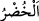
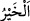
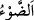
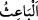

acı-tatlı bütün otlardan yiyebilen, temiz-pis tüm sulardan içebilen yegane hayvan
sığırdır. Nitekim yıl da hem arzulanan işleri hem de istenmeyen işleri içine alır, güzel-
çirkin bütün hâdiseler seneler içinde cereyan eder.
Yine rüya tâbiri konusunda esas kabul edilen şey o rüyayı gören kişinin sözleridir.
Kral da rüyasını sığırlar ve başaklarla dile getirmiştir. İşte Yûsuf (a.s.) büyük zatların
yaptıkları gibi birinci kelimeden iştikâk-ı kebir[48] yoluyla gelecek şeylerin yakın
olduğunu, ikinci kelimeden ise belâ senelerinin geleceğini hissedip anladı. Belâ
kelimesi (Arapça’da) hayır ve şer için müşterek olarak kullanılır. “
” kelimesinde
“
” kelimesinden iki harf vardır. Hem de “
(ışık, aydınlık)” kelimesinin dad
harfi onda zuhur etmiştir. “
”, “el-Bâis (fakir, sıkıntı içinde olan)” demektir.
Müeyyidüddîn Cündî’nin Şerhu’l-fusûs’unda böyle geçmektedir.
Fakir (Bursevî) şöyle der: Rüyada özellikle sığır ile başağın görülmüş olması, sığırın
yeme konusunda alem/remiz olmasındandır. Buğday ise insanların en çok istifade
ettikleri tahıl cinsidir. Böylece bu rüya, insanların en büyük gıdaları ve temel
yiyecekleri olan buğday yönünden geçim ve yaşama sıkıntısına düşeceklerine işaret
etmektedir. Diğer tahıl cinslerinde de kıtlık görülmesi buna ters düşmez.
Yukarıdaki âyetin işareti ise şöyledir: “Yedi semiz inek”; hırs, cimrilik, hased, şehvet,
düşmanlık, gasp ve kibirden ibaret bulunan yedi beşerî sıfattır.
“Zayıf inekler” ise bu beşerî sıfatların zıddı olan kanâat, cömertlik, gıpta, iffet,
şefkat, hilim ve tevâzudan ibaret olan rûhânî sıfatlardır.
“Kral” ruhtur. Ruh, beden şehrinin kralıdır. “İleri gelenler ise” iç ve dış organlar,
his ve kuvvelerdir. Melekût âleminde tasarrufta bulunmak ve burada görülebilecek olan
şeyleri öğrenmek de bunların yapabileceği bir şey değildir.
“Zindandan kurtulan” nefs-i mülhemedir. Nefs-i mülheme, melekût âleminde
cereyan eden herhangi bir şeyi öğrenmek istediği zaman, tefekkür kuvvesiyle kalbe
başvurarak ondan haber ister. Kalb de ona bunu bildirir. Çünkü kalb melekûtu görmekte
ve burada görülebilecek şeyleri mütâlaa etmekte kalb lisanıyla bunlara vâkıf
olmaktadır. Kalb rûhânî şeylerle nefs-i mülheme arasında tercümanlık ederek rûhânî
gayb lisanından anlayabildiklerini nefse tâbir eder ve anlatır. Bazen hayal lisanıyla,
bazen selim düşünce ile, bazen de ilhâm yoluyla anlatır.
“Yedi sene âdetiniz üzere ekin ekersiniz.” ifadesi bu yedi beşerî sıfatın âdet ve
tabîatla terbiye edilmesine işaret ediyor. Böyle bir terbiye, âkıl ve bâliğ olup
mükellefiyet kaleminin çalışmaya başlamasından önce çocukluk devrelerinde olur.
“Sonra da yiyeceklerinizden az bir miktar” yani hayatınızı sürdürmeye yarayacak
kadarı “hariç” kemâle erdiği zaman bu sıfatlardan “biçtiklerinizi” kullanmayınız.
Onları yerlerinde “bırakınız. Bu miktar ise ergenlik sınırına varıp akıl nuru sır
lambasında, kalb camından parlak bir yıldız gibi zuhur edene kadar bedenin ayakta